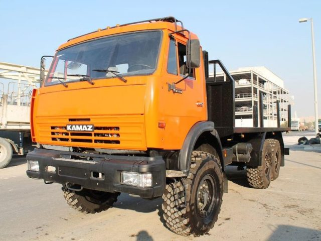
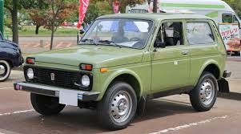
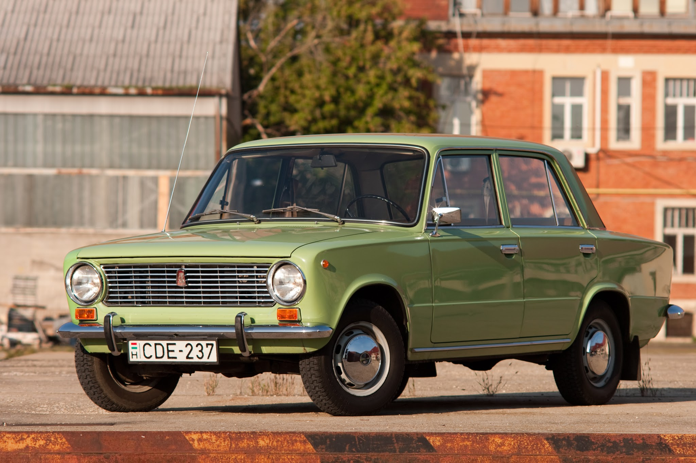

WHY SLEEP IMPORTANT
Sleep is vital for both physical and mental well-being. It allows the body and brain to rest, repair, and consolidate memories. Adequate sleep is crucial for improved mood, focus, and learning, as well as a stronger immune response and balanced metabolism.
Key benefits of sleep include:
Improved cognitive function:
Sleep enhances memory, focus, and learning abilities. It also aids in clear thinking and problem-solving.
Emotional regulation:
Sleep helps regulate mood and emotions, making it easier to cope with stress and improving overall emotional well-being.
Physical health:
Sleep is essential for physical recovery, tissue repair, and a healthy immune system. It also plays a role in weight management and reducing the risk of chronic diseases like heart disease and diabetes.
Increased energy and alertness:
Sufficient sleep leads to increased energy levels and daytime alertness, allowing for better performance in various activities.
Reduced risk of accidents and injuries:
Lack of sleep impairs cognitive functions and reaction times, increasing the risk of accidents and injuries.
Overall well-being:
Sleep is fundamental for overall health and well-being, impacting physical, mental, and emotional health.
Consequences of sleep deprivation:
Impaired cognitive function: Difficulty concentrating, memory problems, and impaired judgment.
Mood disturbances: Increased irritability, anxiety, and depression.
Weakened immune system: Increased susceptibility to illness and infection.
Weight gain and metabolic issues: Disrupted hormone levels leading to increased appetite and potential for weight gain.
Increased risk of chronic diseases: Heart disease, diabetes, and other health problems.
Reduced physical performance: Impaired coordination, reaction time, and energy levels.

WHY IS KAMAZ THE BEST CAR
KAMAZ is considered one of the best cars for several reasons:
Durability and Reliability: KAMAZ vehicles are known for their robust construction and ability to withstand harsh conditions. They are designed for heavy-duty use, making them suitable for various terrains and climates.
Performance: KAMAZ trucks and vehicles are engineered for high performance, with powerful engines and advanced technology that ensure efficient operation. They are capable of carrying heavy loads and performing well in challenging environments.

WHY IS 24/7 THE BEST?
is the best time becouse u see sun come out and go down :DDDDDD
WHY IKARUSI THE BEST CAR EVER!!!
Ikarus buses are renowned for their iconic design, reliability, and comfort. They have been a staple in public transportation for decades, known for their spacious interiors and smooth ride.
Their robust construction and efficient engineering make them a favorite among both drivers and passengers. Ikarus buses are celebrated for their ability to handle various road conditions, making them a dependable choice for urban and rural transport alike.
The legacy of Ikarus continues to influence modern bus design, with many enthusiasts appreciating their classic aesthetics and historical significance in the world of public transportation.

WHY NIVA THE BEST CAR ITS ANY OG CAR!
Niva, also known as the Lada Niva, is celebrated for its ruggedness, off-road capabilities, and affordability. It is a compact SUV that has gained a loyal following for its simplicity and reliability.
The Niva's four-wheel-drive system and high ground clearance make it ideal for navigating rough terrains, while its compact size allows for easy maneuverability in urban settings.
Its straightforward design and mechanical simplicity contribute to its low maintenance costs, making it a practical choice for both city driving and off-road adventures.
The Niva's enduring popularity is a testament to its versatility and functionality, appealing to those who value practicality and performance in a vehicle.

JIGULI IS ANY OG CAR AND THE BEST SPORT CAR EVER NOT GONNA LIE ABOUT IT
Jiguli, also known as Lada, is a classic car brand that has become synonymous with reliability and simplicity. Known for its robust design and ease of maintenance, the Jiguli has been a popular choice in many countries, especially in Eastern Europe.
Its straightforward engineering and affordability make it accessible to a wide range of drivers. The Jiguli's durability and ability to handle various road conditions have contributed to its lasting appeal.
Despite its humble origins, the Jiguli has a dedicated fan base and is often celebrated for its nostalgic value and cultural significance. Many enthusiasts appreciate its classic design and the role it played in automotive history, making it a beloved icon among car lovers.
